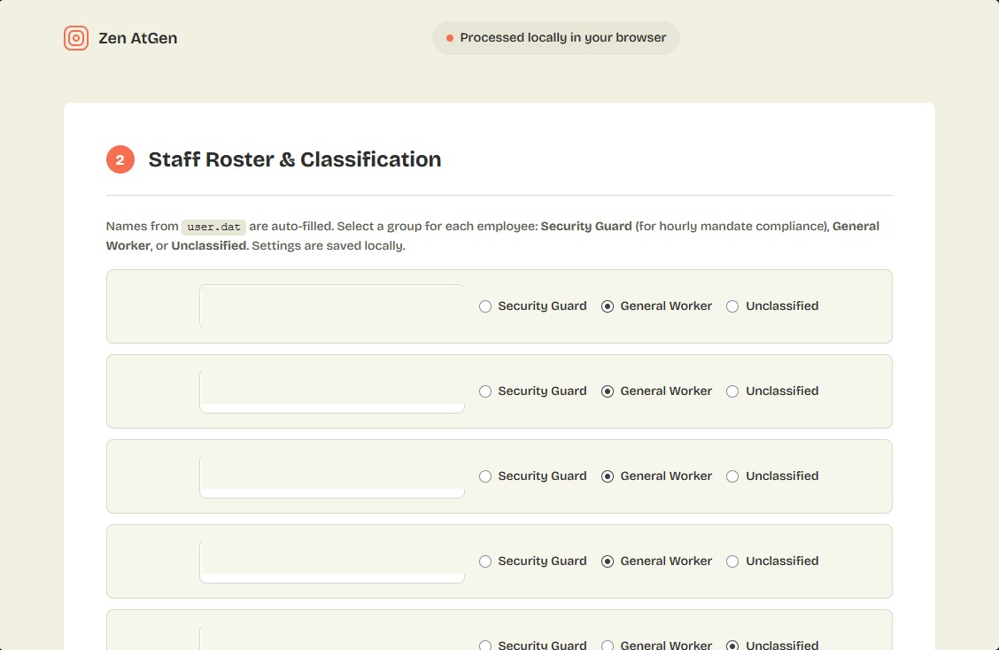

Turn device exports into clear reports
A calmer way to understand ZKTeco attendance data.
From USB export to a report you can actually use.
| Date | Check 1 | Check 2 | Check 3 | Check 4 | Missed |
|---|---|---|---|---|---|
| 14 Oct | 08:00 | 08:52 | 09:41 | 10:55 | 1 |
| 15 Oct | 07:55 | 08:45 | 09:30 | 10:15 | 0 |
From raw punches to clear decisions
A closer look at the steps that turn device exports into useful attendance reports, processed right in your browser.

From raw punches to polished reports
The ZKTeco attlog.dat format is hard to read. Zen AtGen makes it easy—locally, without uploading your employee data.
-
Export device data
Insert a USB drive into your ZKTeco device. From the menu, download attlog.dat (Attendance Data) and optionally user.dat (Staff Names).
-
Load files into Zen AtGen
Plug the USB drive into your computer and select the files. Data is parsed locally in your browser—nothing is uploaded to the internet.
-
Classify your staff
Mark employees as Security Guards or General Workers. Your roster settings are saved on your computer for next time.
-
Generate & export
View daily logs and compliance summaries. Print to PDF, export to CSV for spreadsheets, or download as standalone HTML.
Your data, completely local
Zen AtGen processes your ZKTeco binary files entirely in the browser. It gives supervisors exactly what they need without moving your employee data to the cloud.
Supervisor Reports
Generate role-specific attendance reports for Security Guards, General Workers, or an All-Staff overview. Filter anomalies effortlessly.
Guard Compliance
Track hourly check-in mandates against ZKTeco timestamps. Instantly flag missed checks and calculate daily compliance percentages.
Weekly Timetables
Read clock-in and clock-out times in an intuitive table format. Flag single-punch anomalies that need manual verification.